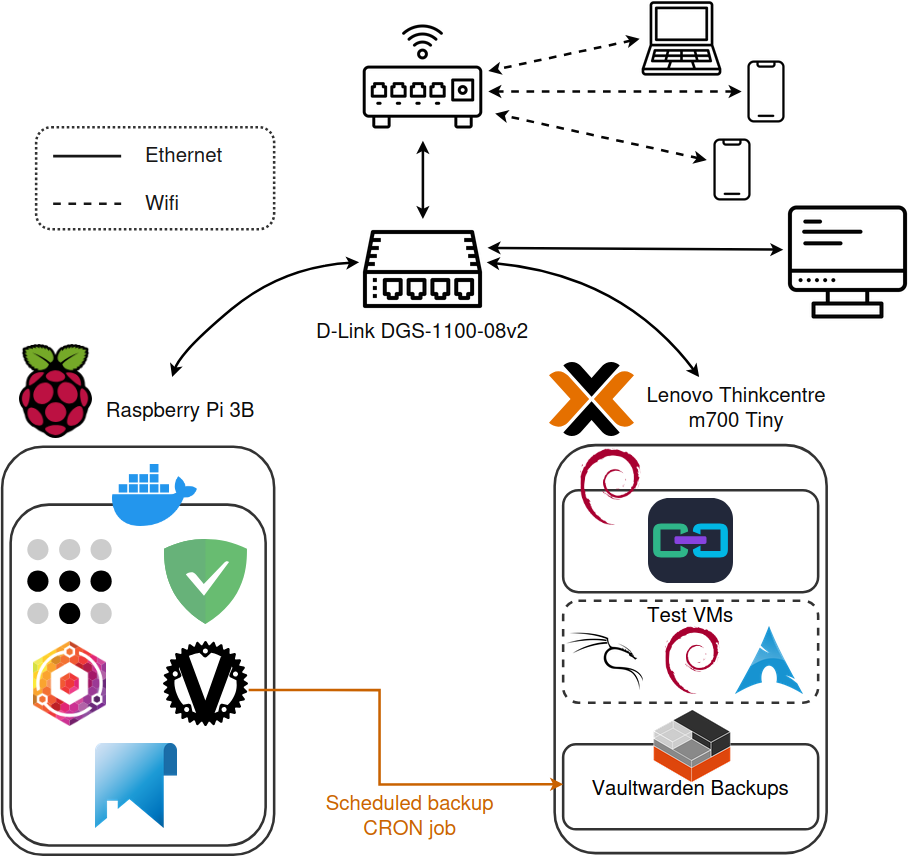
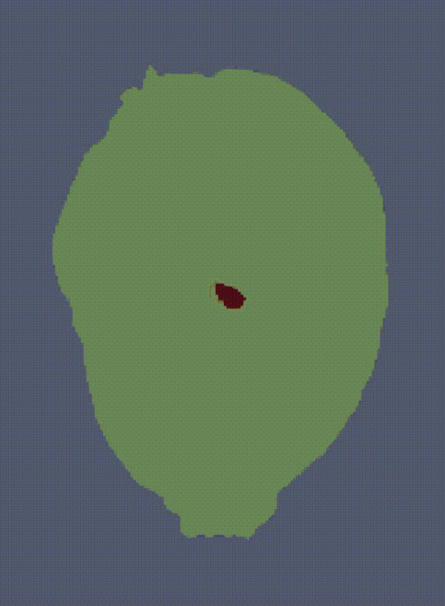

- Python (Pytorch, scikit-learn, Flask...), R
- GNU/Linux (Debian, Arch...)
- Docker, docker-compose
- Vim/NeoVim
I am passionate about building some side-projects, such as my homelab that I use to learn more about networking, virtualization, cybersecurity and the automation of IT infrastructures.
I also love climbing and hiking, and I have a very cute cat named Harold.
Work
Machine Learning Engineer - INRAE, UMR IGEPP
Since February 2025
- Automation of insects tracking through image sequences
- Custom triplet neural networks, constraint programming
- CVAT server administration, deployment of fine-tuned models (using the Nuclio platform) for semi-automated annotations
Engineer - INRAE, UMR IGEPP
May to July 2024
- Modelling the spatio-temporal diffusion of spores using public geographic databases
- Data exploration using visualization tools and statistics
- Streamlit web interface
Doctoral student - INRAE, UMR LISAH
September to December 2023
- Stopped for medical reasons
- Pl@ntNet project
MSc Internship - INRAE, UMR IGEPP
January to July 2023
- Spatio-temporal Fisher-KPP growth model
- Image segmentation neural networks
- Work on computing servers and cloud platforms
Supervising
Océane Gourdin (now PhD student at UMR IGEPP)Teaching
Online Collaborative Resources at University of Rennes (Fall 2025)Some projects I worked on (more on Github)
Homelab
I started this project in late 2024. The initial goal was to get better experience with system and network administration, but it quickly escalated into a fascinating pool of experimentation. Here are some of the services that are running in my homelab:
- AdGuard DNS sinkhole
- Nginx Proxy Manager
- Tailscale VPN
- Vaultwarden password manager with scheduled backups to another machine
- Proxmox server running VMs for testing new things
- Cadvisor, Prometheus, Grafana
When I started this homelab, I wanted it to be as energy-efficient as possible, for both economical and ecological reasons. This was a primary criterion when picking hardware for building my servers. On the software side, I almost exclusively use containerized services through Docker or LXC, and limit my use of virtual machines (which I still occasionally use for testing new things) to save even more power.
Msc Internship project : late blight growth model
This project was supervised by Melen Leclerc (IGEPP, INRAE). The goal was to develop a model capable of describing the growth of late blight on potatoe leaves. To do that, I had to implement efficient image registration techniques, as well as deep image segmentation algorithms, before building the reaction-diffusion model itself.
This website
One of the goals of building this website was for me to understand a bit more about front-end development. This is quite far from my field, but it only made me more curious. I stuck to the basics (HTML, CSS, Javascript), in order to perhaps later learn a bit more about the modern frameworks.
I hope you enjoyed it !